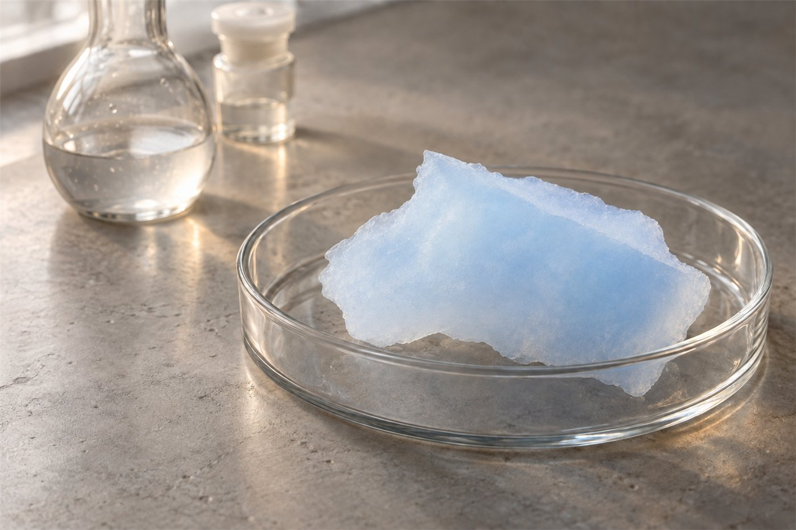

공유된 결과입니다.나와 맞는 분야 찾기 →

나와 맞는 연구 분야
02나노다공성 소재 합성Synthesis of Nanoporous Materials
손으로 직접 만들어 보는 일이 재미있는 사람에게 맞습니다.
조성, 기공 구조, 표면 화학을 조절해 나노다공성 소재를 합성합니다.
- 에어로젤과 다공성 금속 산화물·금속·황화물 합성
- 졸겔·수열 합성과 건조 공정
- 기공 구조와 표면 화학의 제어 및 분석
공유된 결과입니다.나와 맞는 분야 찾기 →

나와 맞는 연구 분야
손으로 직접 만들어 보는 일이 재미있는 사람에게 맞습니다.
조성, 기공 구조, 표면 화학을 조절해 나노다공성 소재를 합성합니다.